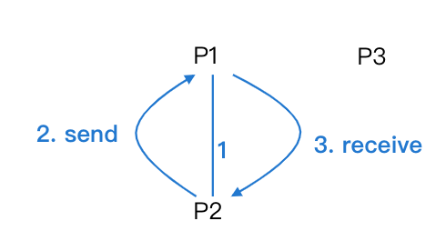
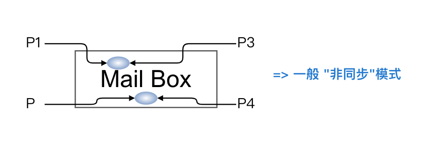

3.6 程序間的溝通 (Process Communication)
又稱為 inter-process communication IPC
方法有兩種：
- Shared Memory
- Message Passing
圖：
目錄
- Shared Memory
- Message Passing
Message Passing (訊息傳遞)
- Def: 當 process 之間不易採用 Shared Memory, 則可採 Message Passing
- 步驟:
- 先建立雙方連結
- 將 Message send 到收方
- 待收方處理後將結果接收 (receive)

- 可分為:
- 直接通訊:
- 對稱: 收, 送雙方皆須指名
ex:send (process, message), receive (process, message) - 非對稱: 送方須指名, 收方不需
ex:send (process, message), receive (id, message), id 為接收後帶入送方的身份
- 對稱: 收, 送雙方皆須指名
- 間接通訊:
- 圖: 
- 直接通訊:
- Ex: 用 Message Passing 解決 Producer (生產者 P1) / Consumer (消費者 P2) 問題 (直接通訊, 對稱式)
// 拿筷子
wait (right);
wait (left);
C.S. // eating
signal (right);
siganl (left);
R.S. // 放下筷子
Hold and wait
Circular waiting
當同時執行時, 會有 deadlock 現象, 故違反 progress
流程：... produce item; ...-> 1. send(consumer, item); ...-> 2. receive(producer, item); ...-> 3. consume item;